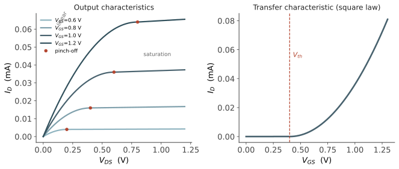

器件 III · MOSFET 的工作原理
层次：本科核心——这是整个微电子最重要的一页。 MOSFET 的思想极简洁：隔着一层绝缘体，用栅电压在半导体表面感应出一条可控的导电沟道。栅极不导通电流（被氧化层隔断），只提供电场——因此控制几乎不耗静态功率。这一点正是 CMOS 能做到极低静态功耗、进而统治数字世界的根本原因。
一、MOS 电容：三种状态
先看没有源漏的 MOS 结构（金属–氧化物–p 型半导体）。加不同栅压 \(V_G\)，半导体表面出现三种状态：
| 状态 | 条件 | 表面情况 |
|---|---|---|
| 积累 | \(V_G < 0\) | 空穴（多子）被吸到表面 |
| 耗尽 | \(V_G\) 略正 | 空穴被推开，留下负电的受主离子 |
| 反型 | \(V_G\) 足够正 | 表面电子浓度超过空穴 → 形成 n 型沟道 |
阈值电压 \(V_{th}\) 定义为表面达到强反型（表面电子浓度等于体内空穴浓度）所需的栅压：
不必背这个式子，但要读出其中的设计旋钮：
- 氧化层厚度 \(t_{ox}\)：越薄 → \(C_{ox}\) 越大 → 栅控能力越强、\(V_{th}\) 越低。"栅控能力"是理解全部器件演进的核心概念；
- 衬底掺杂 \(N_A\)：越高 → \(V_{th}\) 越高；
- 功函数差 \(V_{FB}\)：由栅材料决定——这就是为什么先进工艺要换金属栅（第五页）。
二、电流公式：长沟道模型
加上源与漏，在沟道两端建立电压 \(V_{DS}\)，电子从源流向漏。经典的渐变沟道近似给出两个区域：
线性区（\(V_{DS} < V_{GS}-V_{th}\)，沟道完整）：
饱和区（\(V_{DS} \ge V_{GS}-V_{th}\)，漏端沟道夹断）：

几个必须读懂的含义：
- \(W/L\) 是设计者最直接的旋钮。电路设计的很大一部分工作，就是给每个晶体管选 \(W/L\)；
- 饱和区电流与 \(V_{DS}\) 几乎无关 → 近似恒流源 → 这是放大器与电流镜的基础（第八页）；
- 平方律是长沟道的结果。短沟道器件因速度饱和，\(I_D\) 更接近线性于过驱动电压（第五页）——现代器件早已偏离教科书的平方律，但平方律仍是建立直觉的必经之路。
沟道长度调制：饱和区实际略有斜率，\(I_D \propto (1+\lambda V_{DS})\)。这个小效应对数字电路无关紧要，对模拟电路却生死攸关——它决定了本征增益 \(g_m r_o\) 的上限（第八页）。
三、亚阈值区：被低估的关键
\(V_{GS} < V_{th}\) 时电流并非为零，而是指数地小：
因为此时沟道由扩散主导（承第一页：不同工作区由不同机制主导）。定义亚阈值摆幅：栅压降低多少能使电流下降十倍——
这就是第二页那个 60 mV/dec 极限的再次登场，且这次它决定了整个行业的命运：
- 要让晶体管"关断"（漏电足够小），\(V_{th}\) 必须足够高；
- 要让晶体管"导通"够快，\(V_{DD} - V_{th}\) 必须足够大；
- 于是 \(V_{DD}\) 无法随尺寸一起降低——因为 \(SS\) 卡在 60 mV/dec，降低 \(V_{th}\) 会让漏电指数上升。
这是 Dennard 缩放终结、功耗墙出现的物理根源（下一页正题）。所以"亚阈值"绝不是一个边角知识点，它是理解现代芯片一切困境的钥匙。
四、体效应与四端器件
MOSFET 实际上是四端器件：栅、源、漏、体（衬底）。源体之间加反偏电压 \(V_{SB}\) 会提高阈值电压：
体效应的工程后果：串联堆叠的晶体管（如 NAND 门中的下管、传输门）源极电位被抬高，\(V_{th}\) 随之上升、驱动能力下降。这是数字电路里"堆叠越深越慢"的原因之一，也是模拟设计中必须小心的干扰源。
五、小信号模型：通往模拟电路
模拟设计里，我们关心工作点附近的小信号行为。核心参数跨导：
其中 \(V_{ov} = V_{GS}-V_{th}\) 是过驱动电压。这个式子是模拟设计的中心：
- \(g_m \propto \sqrt{I_D}\)（长沟道）：想要增益就得烧电流，且回报是平方根的——这是模拟电路"贵"的根本原因；
- \(g_m/I_D\) 是效率指标：\(V_{ov}\) 越小，单位电流换来的跨导越大，但速度变慢、失配变差。"\(g_m/I_D\) 方法论"是现代模拟设计的标准工作流；
- 本征增益 \(A_v = g_m r_o\) 是单管能提供的最大电压增益——它随工艺缩放而下降，这正是模拟电路难以受益于先进节点的原因之一（第八页详谈）。
六、NMOS 与 PMOS
PMOS 是对偶结构（n 型衬底、p⁺ 源漏、负栅压开启，空穴导电）。关键差异来自第一页：空穴迁移率约为电子的 1/3。
后果：要获得相同驱动能力，PMOS 宽度需为 NMOS 的约 2–3 倍。这直接决定了 CMOS 标准单元的版图比例（下一页），也影响了逻辑门的设计选择（为什么 NAND 比 NOR 更受青睐）。
七、要点
| 概念 | 为什么重要 |
|---|---|
| 栅极隔着绝缘层控制沟道 | 静态不耗电 → CMOS 低功耗的根本 |
| \(V_{th}\)、\(C_{ox}\)、\(W/L\) | 器件工程与电路设计的主要旋钮 |
| 饱和区近似恒流 | 模拟放大的基础 |
| 亚阈值摆幅 ≥ 60 mV/dec | 供电电压无法继续下降 → 功耗墙 |
| \(g_m = 2I_D/V_{ov}\) | 模拟设计的中心公式 |
| 平方律只对长沟道成立 | 现代器件需要新模型（第五页） |
下一页：缩放定律。把晶体管做小，会发生什么？Dennard 给出了一套漂亮的缩放规则，让行业狂奔了三十年；然后它在 2005 年前后失效了——原因就是本页的 60 mV/decade。